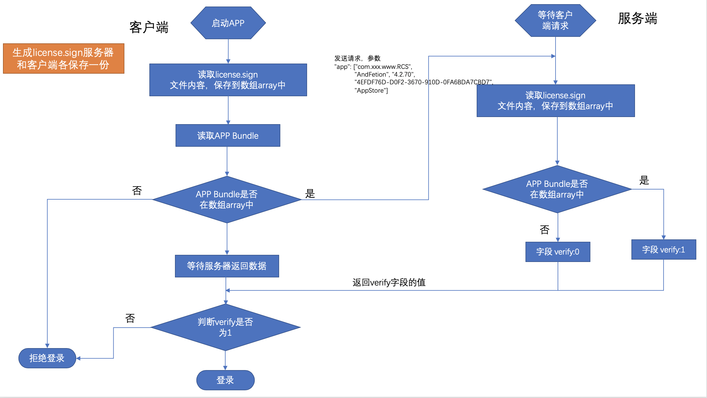
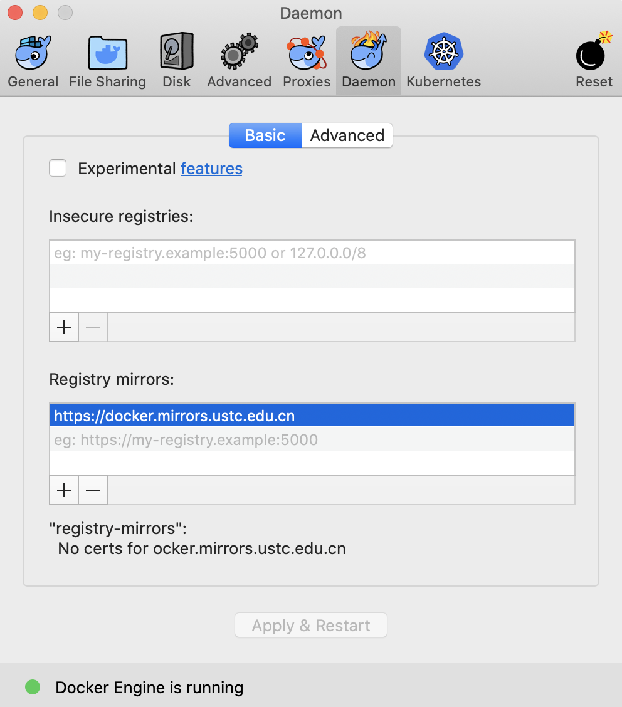
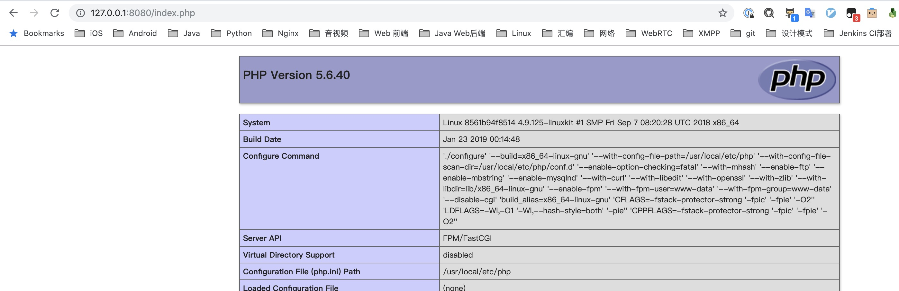

License的应用
解决的场景：APP被逆向修改后，用XCode安装到其他非越狱机器上，这时是需要修改bundle id的，license通过服务器验证APP的bundle id是否被修改（流程见下）。

使用Docker搭建Ngnix+PHP环境
跑得都是本地环境，所以使用Docker最方便（硬件环境Macbook）。
docker安装
1、 安装docker
brew cash install docker
2、镜像加速，修改镜像为：https://docker.mirrors.ustc.edu.cn

Nginx安装
打开终端
1、拉取Nginx镜像
docker pull nginx
2、查看镜像是否安装成功
docker images
PHP安装
打开终端
1、拉取5.6-fpm镜像
docker pull php:5.6-fpm
2、查看镜像是否安装成功
docker images
运行Nginx、PHP容器
1、在宿主机器上（Macbook）创建如下文件夹或文件（打开终端）：
mkdir -p ~/Documents/docker/nginx/conf
mkdir ~/Documents/docker/nginx/conf.d
mkdir ~/Documents/docker/nginx/data
mkdir ~/Documents/docker/nginx/html
mkdir ~/Documents/docker/nginx/logs
mkdir ~/Documents/docker/nginx/www
touch ~/Documents/docker/nginx/nginx.conf
2、运行Nginx容器（打开终端）
docker run -d -p 8080:80 --name mynginx -v /Users/你自己电脑的用户名/Documents/docker/nginx/www:/www -v /Users/你自己电脑的用户名/Documents/docker/nginx/nginx.conf:/etc/nginx/nginx.conf -v /Users/你自己电脑的用户名/Documents/docker/nginx/logs:/wwwlogs -d nginx
3、运行PHP容器（打开终端）
docker run -p 9000:9000 --name myphp-fpm -v /Users/你自己电脑的用户名/Documents/docker/nginx/www:/www -v /Users/你自己电脑的用户名/Documents/docker/nginx/conf:/usr/local/etc/php -v /Users/你自己电脑的用户名/Documents/docker/nginx/logs:/phplogs -d php
4、查看容器状态
docker ps
6、参看PHP容器被分配的IP
docker inspect myphp-fpm | grep '"IPAddress"'
我这边被分配的IP是：172.17.0.3
5、配置Nginx参数，打开~/Documents/docker/nginx/nginx.conf
user nginx;
worker_processes 1;
error_log /var/log/nginx/error.log warn;
pid /var/run/nginx.pid;
events {
worker_connections 1024;
}
http {
include /etc/nginx/mime.types;
default_type application/octet-stream;
log_format main '$remote_addr - $remote_user [$time_local] "$request" '
'$status $body_bytes_sent "$http_referer" '
'"$http_user_agent" "$http_x_forwarded_for"';
access_log /var/log/nginx/access.log main;
sendfile on;
#tcp_nopush on;
keepalive_timeout 65;
#gzip on;
server {
listen 80;
server_name localhost;
#charset koi8-r;
#access_log /var/log/nginx/host.access.log main;
location / {
root /www;
index index.php index.html index.htm;
if (!-e $request_filename) {
rewrite ^(.*)$ /index.php?s=/$1 last;
break;
}
}
#error_page 404 /404.html;
# redirect server error pages to the static page /50x.html
#
error_page 500 502 503 504 /50x.html;
location = /50x.html {
root /usr/share/nginx/html;
}
# proxy the PHP scripts to Apache listening on 127.0.0.1:80
#
#location ~ \.php$ {
# proxy_pass http://127.0.0.1;
#}
# pass the PHP scripts to FastCGI server listening on 127.0.0.1:9000
#
location ~ \.php$ {
#root /www;
# PHP容器IP
fastcgi_pass 172.17.0.3:9000;
fastcgi_index index.php;
fastcgi_param SCRIPT_FILENAME /www$fastcgi_script_name;
include fastcgi_params;
}
# deny access to .htaccess files, if Apache's document root
# concurs with nginx's one
#
location ~ /\.ht {
deny all;
}
}
}
6、在~/Documents/docker/nginx/www创建index.php文件，打开编辑：
<?php
echo phpinfo();
?>
7、打开浏览器访问：127.0.0.1:8080/index.php

License接口开发
1、在~/Documents/docker/nginx/www创建license.sign文件，打开编辑：
com.onez-gz.www
2、在~/Documents/docker/nginx/www创建verify.php，打开编辑：
<?php
$response;
$bundle = $_GET["bundle"];
$filename = "/www/license.sign";
$handle = fopen($filename, "r");
$contents = fread($handle, filesize ($filename));
fclose($handle);
if(strpos($contents, $bundle) !== false){
$response = array('code' => 200,'message' => 'Bundle id verification passed','vertify' => 1,);
}else{
$response = array('code' => 200,'message' => 'Bundle id verification failed','vertify' => 0,);
}
echo json_encode($response);
?>
3、打开浏览器输入：
http://127.0.0.1:8080/verify.php?bundle="hello"
// 浏览器输出
{"code":200,"message":"Bundle id verification failed","vertify":0}
http://127.0.0.1:8080/verify.php?bundle="com.onez-gz.www"
// 浏览器输出
{"code":200,"message":"Bundle id verification passed","vertify":1}
客户端开发
打开XCode创建macOS -> App工程
1、修改项目的bundle id为com.onez-gz.www
2、创建license.sign文件，拖入到项目中，打开编辑：
com.onez-gz.www
3、在Main.storyboard中添加一个button，代码如下
#import "ViewController.h"
typedef void (^CompletioBlock)(NSDictionary *dic, NSURLResponse *response, NSError *error);
typedef void (^SuccessBlock)(NSDictionary *data);
typedef void (^FailureBlock)(NSError *error);
@implementation ViewController
- (void)viewDidLoad {
[super viewDidLoad];
// Do any additional setup after loading the view.
}
- (void)setRepresentedObject:(id)representedObject {
[super setRepresentedObject:representedObject];
// Update the view, if already loaded.
}
#pragma mark -
#pragma mark - Event Response
- (IBAction)loginButtonAction:(id)sender {
// 1、获取当前APP的bundle id
NSString *bundleId = [[NSBundle mainBundle] bundleIdentifier];
// 2、读取main bundle中的license.sign文件
NSString *signPath = [[NSBundle mainBundle] pathForResource:@"license" ofType:@"sign"];
NSString *bundleIdString = [NSString stringWithContentsOfFile:signPath encoding:NSUTF8StringEncoding error:nil];
// 3、bundle是否在license.sign中
if (![bundleIdString containsString:bundleId]) return;
// 4、给服务器发送验证bundle id的请求
[self getWithUrlString:@"http://127.0.0.1:8080/verify.php" parameters:@{@"bundle" : bundleId} success:^(NSDictionary *data) {
NSLog(@"%@", data);
} failure:^(NSError *error) {
NSLog(@"%@", error);
}];
}
#pragma mark -
#pragma mark - Private Methods
- (void)getWithUrlString:(NSString *)url parameters:(id)parameters success:(SuccessBlock)successBlock failure:(FailureBlock)failureBlock {
NSMutableString *mutableUrl = [[NSMutableString alloc] initWithString:url];
if ([parameters allKeys]) {
[mutableUrl appendString:@"?"];
for (id key in parameters) {
NSString *value = [[parameters objectForKey:key] stringByAddingPercentEncodingWithAllowedCharacters:[NSCharacterSet URLQueryAllowedCharacterSet]];
[mutableUrl appendString:[NSString stringWithFormat:@"%@=%@&", key, value]];
}
}
NSString *urlEnCode = [[mutableUrl substringToIndex:mutableUrl.length - 1] stringByAddingPercentEncodingWithAllowedCharacters:[NSCharacterSet URLQueryAllowedCharacterSet]];
NSURLRequest *urlRequest = [NSURLRequest requestWithURL:[NSURL URLWithString:urlEnCode]];
NSURLSession *urlSession = [NSURLSession sharedSession];
NSURLSessionDataTask *dataTask = [urlSession dataTaskWithRequest:urlRequest completionHandler:^(NSData * _Nullable data, NSURLResponse * _Nullable response, NSError * _Nullable error) {
if (error) {
failureBlock(error);
} else {
NSDictionary *dic = [NSJSONSerialization JSONObjectWithData:data options:NSJSONReadingMutableContainers error:nil];
successBlock(dic);
}
}];
[dataTask resume];
}
@end
以上就是整个验证流程，有问题可以发邮箱给我，demo就不发了，很简单的。